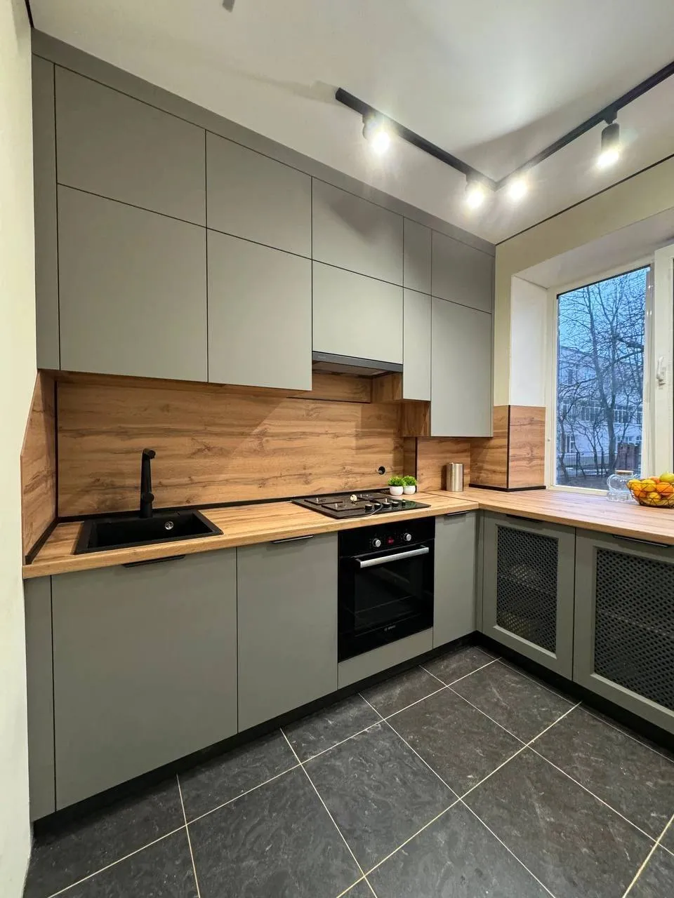

Плёнка на солнечной стороне
Это тот случай, когда лучше сказать заранее, чем разбирать претензию через два года.

Выгорают все
На солнце рано или поздно происходит выгорание декоративной поверхности — это свойство материала, а не брак партии. Плёнки из более дорогого сегмента имеют защитные покрытия и выгорают заметно медленнее, но полностью не защищены и они.
Что заметно быстрее
Сильнее всего разница видна там, где рядом оказываются выгоревший и невыгоревший участок одного декора: фасад, наполовину закрытый шторой; торцевой модуль у окна; дверца, которая полгода стояла открытой. Насыщенные тёмные и яркие декоры уходят заметнее светлых и нейтральных — на бежевом или сером сдвиг тона почти не читается.
Что можно сделать на этапе подбора
- Скажите менеджеру, что фасады идут на солнечную сторону, — подберём плёнку под эту нагрузку.
- Не добирайте отдельные фасады к комплекту через год-два: даже тот же артикул рядом со стоявшим на солнце будет отличаться.
- Если объект переносится, лучше заказать весь комплект одной партией.
Гарантия
Гарантийный срок на фасады — 12 месяцев. Естественное выгорание под ним не покрывается, но если случай спорный, обратитесь к менеджеру: разберём конкретную ситуацию.
Палитру целиком можно посмотреть в каталоге декоров — 582 образца с поиском по названию и артикулу.
← Все материалы